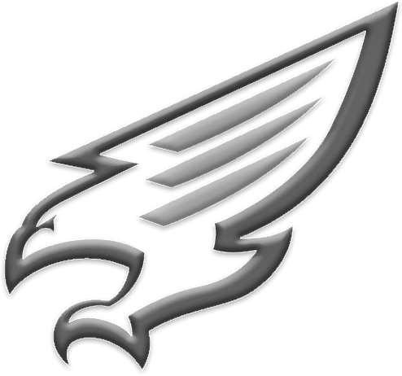
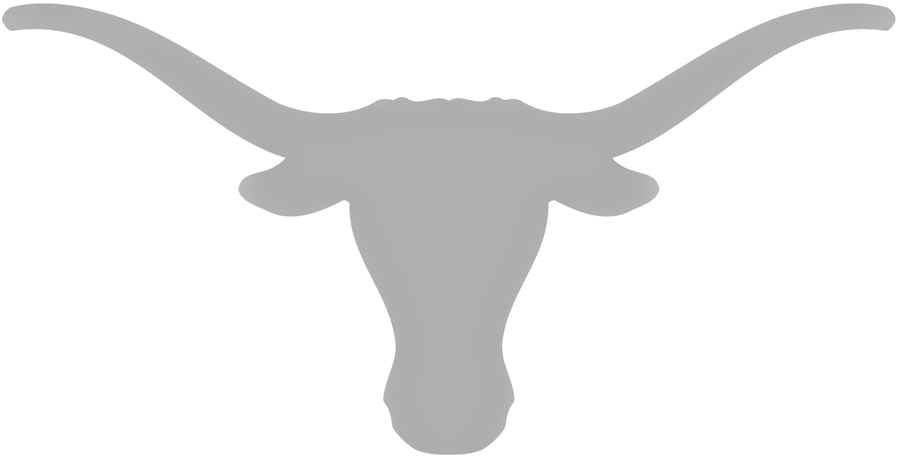

Education and Training

Obra D. Tompkins High School
SAT: 1550 (750 Reading & Writing, 800 Math)
Rank: 34/674 - Top 5%
GPA: 4.75 (Weighted) 4.00 (Unweighted)
AP Exams (9 taken, all scored 5/5): Computer Science A, Computer Science Principles, Statistics, Chemistry, English Language and Composition,
Italian Language & Culture, (self-studied), US History, World History Modern, Human Geography

University of Texas Austin
GPA: 3.80 (cumulative)
Computer Science Entry-Level major; admitted and accepted the offer on February 2, 2023; admitted and accepted for Polymathic Scholars Honors on February 27, 2023
Robotics and AI; Introductory Linux usage, C++ and Arduino programming for robot animation; Dr. Justin Heart
Bocconi University, Milan, Italy
Bocconi Online Summer School for High School Students. Participation certificate for 48 total teaching hours:
Machine Learning and Artificial Intelligence Lab; Prof. Riccardo Zecchina, BAI
Computer Coding Lab with Python; Prof. Massimo Ballerini, BEMACS